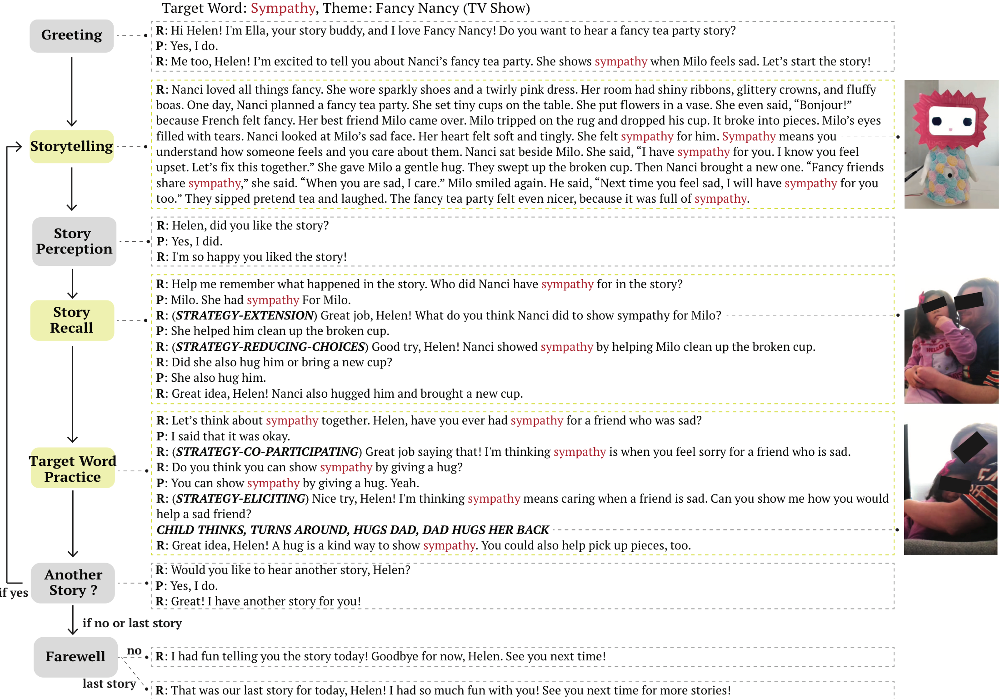
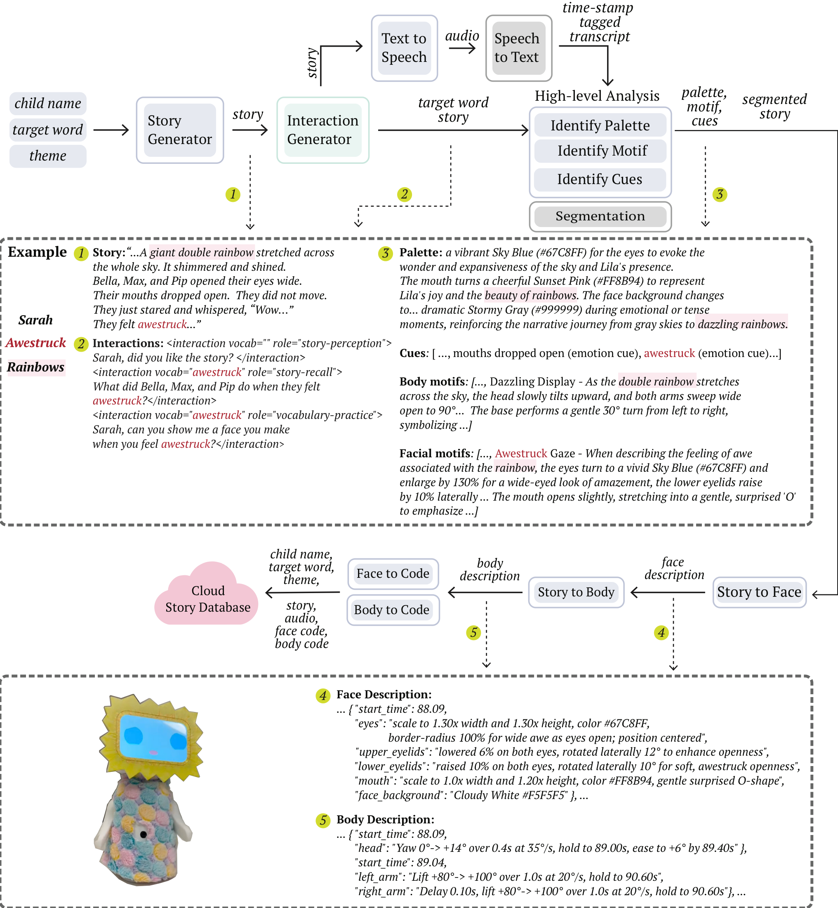
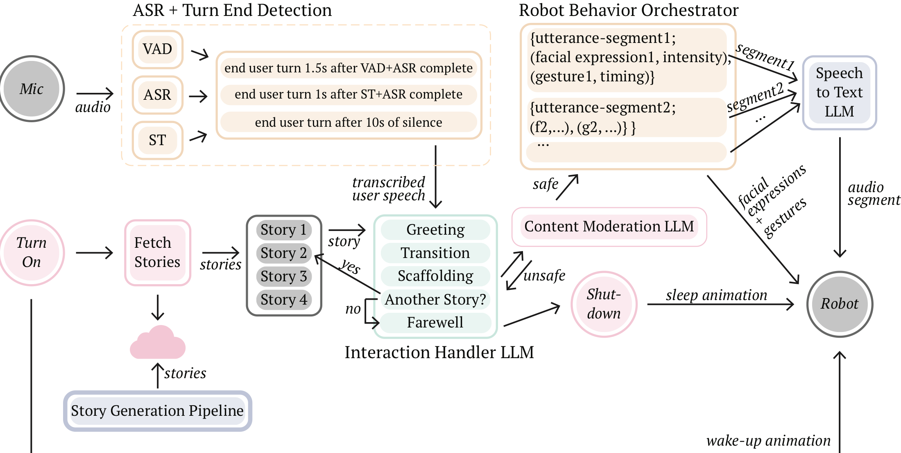
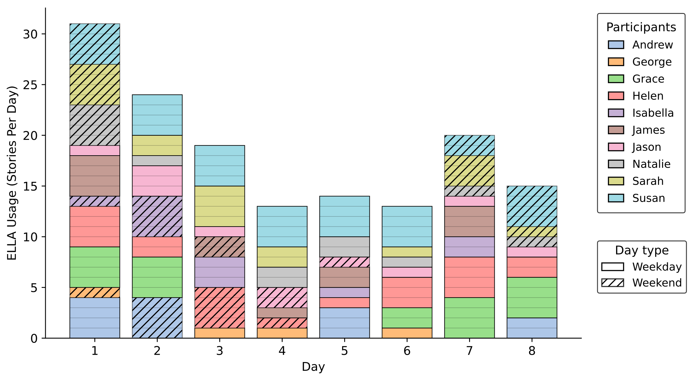
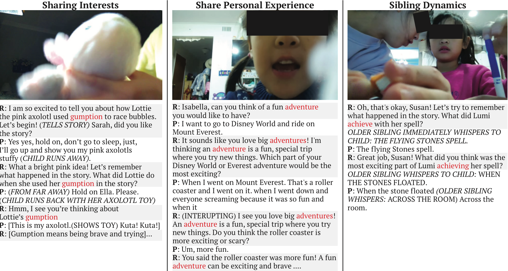
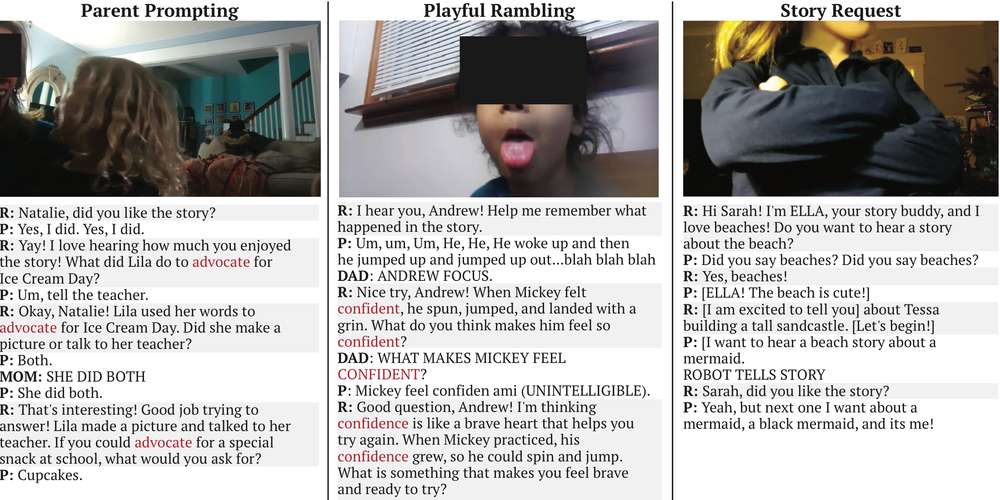

Studio / ELLA
ELLA
ELLA: Generative AI-Powered Social Robots for Early Language Development at Home
Victor Nikhil Antony*, Shiye Cao*, Shuning Wang, and Chien-Ming Huang
*equal contribution
Early language development shapes children’s later literacy and learning, yet many families have limited access to scalable, high-quality support at home. Recent advances in generative AI make it possible for social robots to move beyond scripted interactions and engage children in adaptive, conversational activities, but it remains unclear how to design such systems for pre-schoolers and how children engage with them over time in the home.
We present ELLA (Early Language Learning Agent), an autonomous, LLM-powered social robot that supports early language development through interactive storytelling, parent-selected language targets, and scaffolded dialogue. Using a multi-phased, human-centered process, we interviewed parents (n=7) and educators (n=5) and iteratively refined ELLA through twelve in-home design workshops. We then deployed ELLA with ten children for eight days.
Design process
We followed a three-phased, human-centered design process to develop a social robot for early language development in children aged 4–6 at home. It addressed two questions: how to design developmentally appropriate interactions for pre-schoolers (RQ1), and how children engage and learn with a generative AI-driven robot over an extended period, at home (RQ2).

Design goals
We conducted semi-structured interviews with parents (n=7) and educators (n=5) about everyday language-learning practices, observed challenges, instructional strategies, and the constraints shaping language use at home and in classrooms. We synthesized themes from these interviews, along with insights from prior work, into six design goals.
Leverage storytelling as a flexible, interest-driven learning context
Parents and educators consistently described storytelling as a central pedagogical practice for supporting early language development.
Provide repeated, contextualized exposure to vocabulary
Educators described revisiting the same stories or themes across days, while parents reported rereading favorite books and repeating words in everyday conversations.
Blend explicit and implicit vocabulary instruction
Educators discussed target words during read-alouds, while parents interjected short explanations (e.g., “this means...”) without breaking the narrative flow.
Support both receptive and expressive language development
Children often understand more words than they can articulate. Educators and parents used low-pressure prompting strategies (e.g., fill-in-the-blank questions) without requiring correctness.
Scaffold language use to support diverse developmental needs
Educators emphasized differentiation, while parents adapted their own prompts based on daily fluctuations in attention and interest.
Maintain engagement through expressive storytelling practices
Parents and teachers described using expressive prosody, voice modulation, facial expression, and theatrical delivery to maintain children’s attention.
Iterative design at home, with families
We developed an exploratory social robot prototype and refined it across 12 at-home workshops by observing children’s interactions with early versions of the system and incorporating feedback from both children and parents. Each workshop took approximately 60 minutes.
Improving interaction flow and quality
High response latency (approximately 10 seconds) disrupted conversational turn-taking, and several children described the robot as “scary.” We restructured turn detection, added incremental text-to-speech, and introduced brighter colors, interchangeable faceplates, and a soft, plush exterior.
Improving story content and flow
Children struggled to follow longer, conceptually dense stories that introduced multiple vocabulary words. We shortened narratives, limited each story to a single target word, and reframed stories around familiar, everyday contexts personalized to the child’s interests.
Improving interaction questions
Questions interspersed throughout the story disrupted narrative flow. We repositioned them to follow the narrative arc, progressing from story perception, to story recall, and finally to vocabulary practice grounded in personal experience.
Improving onboarding and deployability
We developed a user interface for generating and reviewing individualized content, added content moderation using Llama-Guard-4-12B, refined onboarding procedures, and validated data collection and logging pipelines.
System design
ELLA is built on a custom social robot platform actuated by five servo motors controlling base rotation, head tilt and rotation, and independent arm movement. Once ready, ELLA greets the child and asks whether they would like to hear a story. Each story is generated around a parent-selected target word and a theme aligned with the child’s interests, and ELLA tells at most four stories per day.

Story generation
Given a theme and a target word, a GPT-5 model writes a 200-word story in which the target word appears at least three times and is taught both implicitly and explicitly. A second model adds three questions: story perception, story recall, and vocabulary practice.
Storytelling behavior generation
Xpress3D extends Xpress into a multimodal behavior generator that produces facial expressions and body gestures aligned to a story’s narrative structure, tone, and context.
Interaction behavior generation
For each child turn, a GPT-OSS 120B LLM produces a behavior plan: a scaffolding strategy followed by short utterances, each with a facial expression and a gesture primitive from a fixed behavior library.


In-home deployment
To examine how children interact with a storytelling robot in real-world settings, how the system fits into family routines, and whether it can support early language development, we deployed ELLA with ten children. Each family hosted the robot for eight consecutive days.
Parents selected four target vocabulary words that their child did not yet know, and provided story themes based on the child’s interests. Parents were encouraged to engage with ELLA for at least one story per day, but were told that interaction timing and frequency were flexible and that missing days was acceptable.
Vocabulary assessment
A pre- and post-deployment receptive vocabulary assessment in a PPVT-style format.
Parent diaries
A short daily diary on what initiated sessions, who was present, and the child’s affect.
Interviews
Semi-structured interviews with parents and structured interviews with children after the deployment.
Session logs
Audio and video of story sessions, session times, and conversational transcripts.
Engagement and learning outcomes
Across the eight-day deployment, children used ELLA regularly but with substantial variation in cadence, social configuration, and interaction quality.

Vocabulary learning outcomes
On average, each child correctly recognized 2.8 words on the post-deployment PPVT-style assessment. The gain in target words children knew from pre- to post-deployment (M = 2.6) was significantly greater than zero (p = .001).
Expressive language
Children used the target words when responding to ELLA, and used more words per turn during the second half of the deployment than the first (M = 0.92, p = .037). Parents reported that children slowed down, spoke louder, and articulated more clearly to help the robot “understand” them.
Child language usage during deployment
Highlighted words are those the child learned by the end of the deployment study.
| Pseudonym | Age | Stories listened to | Target words used | Target word usage during story sessions | Total target words used | Avg words/turn |
|---|---|---|---|---|---|---|
| Grace | 4 | 18 | 3/4 | Massive (14) Ordinary (16) Clumsy (13) Imitate (0) | 43 | 3.78 |
| Andrew | 4 | 13 | 3/4 | Permission (3) Self-Control (2) Imagine (1) Confident (0) | 6 | 3.48 |
| Sarah | 4 | 18 | 4/4 | Compassion (2) Awestruck (2) Perseverance (0) Gumption (0) | 4 | 3.48 |
| George | 4 | 4 | 1/4 | Chirp (2) Permission (0) Consequences (0) Orbit (0) | 2 | 2.46 |
| Jason | 5 | 11 | 2/4 | Clumsy (8) Imitate (1) Somersault (0) Frisky (0) | 9 | 4.91 |
| Natalie | 5 | 12 | 2/4 | Advocate (2) Bait (1) Justice (1) Apartment (0) | 4 | 3.02 |
| James | 6 | 10 | 3/4 | Frisky (4) Wonder (3) Permission (1) Sympathy (0) | 8 | 2.48 |
| Susan | 6 | 30 | 4/4 | Achieve (23) Attempt (17) Persistent (16) Considerate (10) | 66 | 6.30 |
| Helen | 6 | 20 | 4/4 | Advocate (9) Sympathy (7) Legal (5) Empathy (5) | 26 | 4.98 |
| Isabella | 6 | 11 | 3/4 | Usual (3) Sheriff (1) Adventure (1) Orbit (0) | 5 | 4.60 |
Children’s overall experience
Eight out of nine children indicated that they like or love ELLA (M = 4.1 out of 5) and similarly like or love talking to ELLA (M = 3.9). Children generally evaluated ELLA’s stories positively (M = 4.2), while their perceptions of being understood by ELLA were more mixed.
Interaction breakdowns in the home
Speech recognition errors frequently manifested as interaction breakdowns, especially in noisy environments, as ELLA could not distinguish speakers. Families adapted the environment and setup, for example by moving ELLA from a shared living room to a bedroom.
Interaction patterns in the home
Our deployment data highlighted interaction patterns that inspire new design opportunities. Children applied target words not only within the narrative but also in novel ways, often relating them to personal experiences, and ELLA rarely sat in a pure dyad: it existed as a social artifact inside a dynamic social scene.


Language use beyond story sessions
Outside of story sessions, parents described children bringing target vocabulary into shared reading, play, and conversation, indicating transfer beyond the interaction itself.
Robots as social artifacts
Parents modeled how to answer, encouraged more complete sentences, and managed background chatter. When older siblings were present, they occasionally answered questions on the child’s behalf.
Children’s mental models
Children treated being understood or not as relational: speech recognition errors were experienced not as technical “errors,” but as social refusal.
“We were reading about a bike and a little girl who was trying again and again and again. I said, ‘Well, what is that?’ and [Sarah] goes, ‘Perseverance...and gumption!’”
Sarah’s parent, on vocabulary use during shared reading
“[when building a toy] he used ‘frisky’ to express his excitement and ‘clumsy’ when his toy broke into pieces since his hands weren’t controlling well.”
Jason’s parent, on vocabulary use during play
Lessons learned and design opportunities
While the deployment demonstrated ELLA’s potential, it also surfaced key insights into the complex realities of home-based engagement with pre-school aged children. We distill these insights into lessons learned and design opportunities for generative AI-powered social robots supporting early language learning at home.
| Lesson | Design opportunities |
|---|---|
| Inviting caregiver partnership could enrich language development | 1. Make learning gains visible through caregiver-facing reflective summaries. 2. Extend language learning beyond session through robot-caregiver collaboration. |
| Stories need freshness to retain playfulness over instructional tone | 3. Support low-effort, ongoing co-authoring to keep content aligned with shifting interests and goals. 4. Balance meaningful repetition and novelty through narrative variation. |
| Making talk feel safe needs legible, low-pressure interaction | 5. Scaffold question complexity and turn-taking to children’s moment-to-moment readiness. 6. Explicitly build and support children’s mental models of robot state. |
| Robots could treat the living space as a pedagogical resource | 7. Leverage multimodal intelligence to support embodied questioning. 8. Turn multi-party presence into a learning catalyst. |
| Rigid interaction obligations are incompatible with family routines | 9. Sustain learning through flexible cadence and fitting into family routines. 10. Enable spontaneous and proactive engagement through placement in shared spaces. |